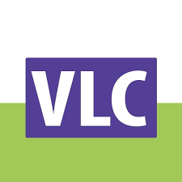

Mijn naam is Roland uit H4A van het Vlietlandcollege
en dit is de website die ik heb gemaakt voor informatica.
Waarom ik informatica heb gekozen
Ik heb informatica gekozen, omdat ik graag zou willen weten hoe ik kan
programmeren zodat ik er later iets mee kan gaan doen. Het leuke aan informatica
vind ik tot nu toe om te zien dat wat je zelf hebt gemaakt ook echt werkt als je
het probeert te gebruiken.
